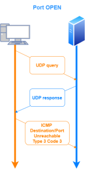
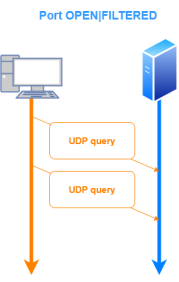
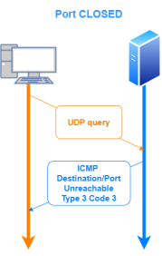

-sU: UDP scan
Nmap also supports UDP scanning, but note that we don't have as many options as we do with TCP scanning, moreover these scans are much slower and more difficult to conduct than TCP scans.
For most of the ports Nmap sends simple UDP packets but for the most common UDP services/ports, Nmap sends a protocol-specific payload in its UDP packet, designed to get the target service to send a UDP response back.
Note that these payloads are sent only to those ports associated with the common UDP services. If someone has altered a standard UDP service to listen on an unusual port, this technique will not find it because only a UDP packet without a payload will be sent to the unusual port. However, it is exceedingly rare to find a production network with a standard UDP service listening on an unusual port.
Some of these commons services are: 7 (echo), 53 (domain), 111 (rpcbind), 123 (ntp), 137 (netbios-ns), 161 (snmp), 500 (isakmp), 1645/1812 (radius), 2049 (nfs)
example: nmap -sU 10.50.97.5 --top-ports 20
| Probe Response | Assigned State |
|---|
| Any UDP response from target port (unusual) | open |
| No response received (even after retransmissions) | open|filtered |
| ICMP port unreachable error (type 3, code 3) | closed |
| Other ICMP unreachable errors (type 3, code 1, 2, 9, 10, or 13) | filtered |
port filteredfiltered
means that nmap is not sure of the exact state of the port because nmap after several attempts will
don't get responseThere could be some reasons for that, like a firewall filtering the port or an IDS that filter the response.